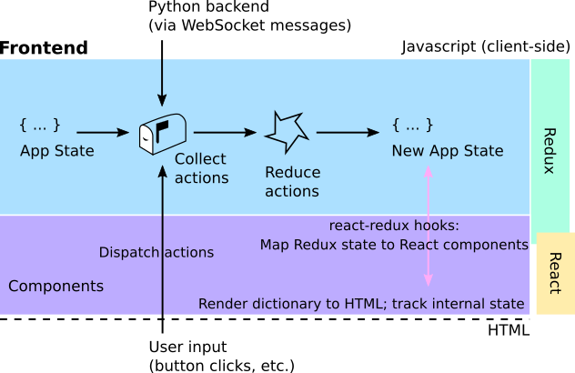

Adding new features¶
This section will help you get started adding new features to SkyPortal. We’ll discuss the application structure and data flow, and introduce some of the main technologies that are employed, outlining their basic usage. We’ll dig into the code base by walking through the process of adding a simple new feature: a button that triggers an API call to the back-end, which generates a random string that is displayed in the browser.
Front-end overview: React & Redux¶
The SkyPortal front-end uses React, a component-based UI library, in conjunction with Redux, a front-end state-management library. See the following links for introductory tutorials to these and related libraries, from which much of the below is drawn:
Basic React concepts: Elements and Components¶
In React, elements are the smallest building blocks of an app and correspond to DOM elements, but are simple JavaScript objects that are cheap to create. Elements describe what should be displayed in the browser. Here’s a simple example of an element (written with a JSX tag):
const element = <h1>Hello, world</h1>;
Components are essentially pure JavaScript functions that take inputs (called “props”) and return elements. Let’s look at a simple example:
const Component = () => {
return <h1>Hello, world</h1>;
};
As you can see, our component is simply a function (written above as an ES6 arrow function) that returns an element. If arrow functions look unfamiliar, the above component definition is equivalent to:
function Component() {
return <h1>Hello, world</h1>;
}
Components can be defined as classes or functions, but in this tutorial we’ll always use the functional form. As noted above, components can take inputs, called props. Let’s take a look at a simple component that takes a single “props” argument name:
const Component = (props) => {
return (
<h1>
Hello, {props.name}
</h1>
);
};
This component returns an element, that, when rendered into the DOM (more on this below), displays a header containing the text “Hello, Maria” (assuming we passed in name='Maria'). Inside JSX tags, JavaScript expressions must be wrapped in curly braces, as props.name is above. If we instantiate this component and pass in the value ‘world’ to the name prop, the resulting value is identical to the first element we defined above:
const helloWorldElement = <Component name="world" />;
is identical to:
const helloWorldElement = <h1>Hello, world</h1>;
Note that React component names should always be capitalized, as React looks for this to distinguish component tags (e.g. <Component />) from DOM tags (e.g. <div>...</div>).
Now we know a bit about React elements and components, but we still haven’t actually rendered anything into the DOM. To render a React element into a DOM node, we pass both into ReactDOM.render() Let’s look at a full example:
import React from 'react';
import ReactDOM from 'react-dom';
// Define our component:
const Component = (props) => (
<h1>
Hello, {props.name}
</h1>
);
// Render the element it returns into the DOM (into the DOM element with ID "root"):
ReactDOM.render(<Component name="world" />, document.getElementById("root"));
We define our component, then pass an instance of that component (which evaluates to a React element) as the first argument to ReactDOM.render(), and pass the DOM element that we want to render our element into as the second argument. (Note that in the above component definition, we’re using an arrow function with a “concise body” implicit return.)
Components can also render other components, as in the following example:
const Welcome = (props) => (
<h1>Welcome, {props.name}</h1>
);
const HomePage = () => (
<div>
<Welcome name="Maria" />
<Welcome name="Sofia" />
<Welcome name="Li" />
</div>
);
ReactDOM.render(<HomePage />, document.getElementById("root"));
This renders a div containing our three welcome headers into the DOM element whose ID is “root”.
Component state¶
Components can have their own internal state, independent of the props that are passed into them. To illustrate, let’s create a component that tracks how many times a button has been clicked, and displays the count.
For functional components, we use React’s useState hook to create a state object and a function that updates it. Let’s first just define a component with some state that displays the value of that state:
import React, { useState } from 'react';
const Counter = () => {
const [count, updateCount] = useState(0);
return (
<div>
Current count: {count}
</div>
);
};
We pass in 0 as the default value to useState, which returns a tuple containing our state object (which we’ve called count) and a function that can update that state (which we’ve called updateCount). So now we have a component that has its own state and displays that value in a div, but that isn’t very useful because we have no way of interacting with it to update that value. Let’s define a handler to update the count, add a button, and pass our handler to the onClick event in the button:
import React, { useState } from 'react';
const Counter = () => {
const [count, updateCount] = useState(0);
const handleClick = () => {
const newCount = count + 1;
updateCount(newCount);
};
return (
<div>
<div>
Current count: {count}
</div>
<div>
<button type="button" onClick={handleClick}>
Increment!
</button>
</div>
</div>
);
};
Let’s look at what’s happening here: we’ve defined a new function in our component called handleClick that increments the value of our count state by 1, and have passed that as a callback to the button’s onClick event. Now every time we click the button, handleClick will be executed which will increment the value of count by 1. React tracks whenever a component’s props or state are updated, and updates the elements being rendered into the DOM accordingly. Great, our first interactive component with its own state is working! Now that we’ve learned some of the basics of React, let’s take a look at Redux, another front-end library employed in our application.
Redux basics¶
We use Redux to store and manage global front-end state. The basic idea is simple: Redux provides a global store object that contains the application state and allows that state to be updated via the dispatching of actions. Actions are simply objects with a type attribute and may contain a payload, e.g. { type: 'UPDATE_SOURCES', data: { sourceList: [{ id: '14gqr', ... }, ...] }}. We dispatch actions via the Redux function store.dispatch, and these actions are handled by reducers which specify how the application state should be updated in response to actions dispatched to the store. Let’s take a look at an example of creating actions and reducers:
// Define our action type:
const UPDATE_SOURCES = "UPDATE_SOURCES";
// Define our reducer:
const reducer = (state = { sourceList: [] }, action) => {
switch (action.type) {
case UPDATE_SOURCES: {
const { sourceList } = action.data; // Object destructuring assignment
return {
...state, // Object spread operator
sourceList // Object literal property shorthand
};
}
default:
return state;
}
};
(If the above JavaScript syntax is unfamiliar, please refer to the object destructuring assignment docs, object spread syntax docs, and a description here of object literal property shorthand.) Let’s break this down: we’ve defined our action type, which is just a string literal, and assigned its value to the constant UPDATE_SOURCES. We also defined a reducer (the function named reducer) which takes two arguments: state, the current state value (which we’ve given a default value of { sourceList: [] } here) and action, the action object that has been dispatched to the store. Our reducer then returns a new object (or the original state object, described below) based on the previous state and the data contained in action. As you can see, the original state is returned with no changes by default, which is the case whenever an action is dispatched whose type doesn’t match any of the cases we’ve described in our reducer. Reducers are pure functions that take the current state and an action as arguments, and return a new state object. Whenever an action is dispatched, each of the reducers in the store is called, with the current state and the action passed in as arguments, and only those reducers whose cases match the action type will return a modified state object.
In SkyPortal, we’ve added a utility method to the global store object to inject reducers to the store. Each reducer corresponds to its own branch of the state tree, which is specified when we inject the reducer into the store. Let’s look at an example, assuming we’re creating new a file in the static/js/ducks directory (our store is defined in static/js/store.js):
import store from '../store';
// Define our action type:
const UPDATE_SOURCES = "UPDATE_SOURCES";
// Define our reducer:
const reducer = (state = { sourceList: [] }, action) => {
switch (action.type) {
case UPDATE_SOURCES: {
const { sourceList } = action.data;
return {
...state,
sourceList
};
}
default:
return state;
}
};
// Inject our reducer into the store, mapping it to the 'sources' state branch:
store.injectReducer('sources', reducer);
This warrants a brief note on code organization: we bundle all of our Redux-related code (action types, action creators, reducer) associated with a particular branch of the application state together in a file in the static/js/ducks directory (read more about “ducks” modules here). Each component definition typically goes in its own file in static/js/components.
Now that we’ve added our reducer to the store, whenever an action of type UPDATE_SOURCES is dispatched, our reducer will update the sources branch of the application state as specified. So far, our global application state looks like: { sources: { sourceList: ...} }.
We have injected our reducer into the store that can handle actions of the type UPDATE_SOURCES, so now let’s dispatch one. We use the react-redux library which provides a useDispatch function, giving us access to the store’s dispatch. Dispatching an action is as simple as:
import { useDispatch } from 'react-redux';
const dispatch = useDispatch();
const newSourceList = resultFromSomeAPICall();
dispatch({ type: 'UPDATE_SOURCES', data: { sourceList: newSourceList } });
The store dispatches the action, and applies each of our reducers to it, creating a new state object from the return values of our reducers (each reducer returning the branch of state it’s associated with, e.g. the return value of the reducer above corresponds to the ‘sources’ branch, or state.sources, as specified in our store.injectRecuer call). Typically we define action creators, functions that return action objects, and call those inside dispatch rather than explicitly pass in these clunky action objects everytime we need to dispatch an action. Here’s an example of an action creator being defined, and then using it to dispatch an action:
// Define action creator
const updateSources = (newSourceList) => {
return { type: 'UPDATE_SOURCES', data: { sourceList: newSourceList } };
};
// Get some data
const newSourceList = resultFromSomeAPICall();
// Dispatch an action containing data from above
dispatch(updateSources(newSourceList));
We’ll often dispatch actions when users submit data, click a button, or if a websocket message is received from the back-end (more on this later) telling the front-end that the DB has been updated and it should re-fetch some data (we always want the relevant portions of the front-end state to stay in sync with the back-end DB).
A typical pattern you will see in SkyPortal is: make an API call (an HTTP request) to fetch data from the back-end, then dispatch an action containing the response data to update the front-end state accordingly. We’ve written a utility function in static/js/API.js that simplifies the process, utilizing thunks.
From https://alligator.io/redux/redux-thunk/:
Redux Thunk is a middleware that lets you call action creators that return a function instead of an action object. That function receives the store’s dispatch method, which is then used to dispatch regular synchronous actions inside the body of the function once the asynchronous operations have completed.
The function that the action creator returns is a thunk, to which the redux-thunk middleware library suppies the store’s dispatch. We can then execute some statements inside the thunk, including making API calls to the back-end, and then dispatch an action containing the result. Let’s illustrate with an example. Here’s a typical SkyPortal action creator (this is a simplified version of part of the actual source code):
import * as API from '../API';
// Action type
export const FETCH_SOURCES = 'skyportal/FETCH_SOURCES';
// Action creator that returns a thunk
export function fetchSources() {
return API.GET('/api/sources', FETCH_SOURCES);
}
When we call dispatch(fetchSources()), the thunk returned by API.GET is called, which dispatches an action of type FETCH_SOURCES, then makes an asynchronous HTTP GET request to the back-end. If the request returns with a successful response, the response data is then packaged into another action of type “FETCH_SOURCES_OK” which is then dispatched to the store. The first action dispatched, of type FETCH_SOURCES, may or may not need to be handled in our reducers. In the case of SkyPortal, we do indeed handle this action and update the front-end state object sources.queryInProgress in our reducer. The final action dispatched, of type “FETCH_SOURCES_OK”, which contains the HTTP request response data, is also handled in our reducer, updating other portions of the sources branch of the app state.
In order for our components to access the application state, the react-redux library provides the useSelector hook:
import { useSelector } from 'react-redux';
// Accessing the application state
const { sourceList } = useSelector((state) => state.sources);
Now that we’ve learned a bit about the various technologies employed in the front-end, let’s learn by getting our hands dirty and add a dummy feature to SkyPortal.
Adding a new end-to-end SkyPortal feature¶
Now we’ll put all these pieces together and walk through adding a new “feature” to SkyPortal: a simple comments section.
Front-end¶
We’ll start with defining our new TestComments component in a new file in the components directory (static/js/components/TestComments.jsx):
import React, { useState, useEffect } from 'react';
import { useDispatch, useSelector } from 'react-redux';
// Import our action creators from static/js/ducks/testComments.js - see below
import * as commentsActions from '../ducks/testComments';
const TestComments = () => {
const comments = useSelector((state) => state.testComments);
const dispatch = useDispatch();
const [newCommentText, setNewCommentText] = useState("");
// Fetch comments upon initial component render
useEffect(() => {
dispatch(commentsActions.fetchComments());
}, [dispatch]);
// Define text input field's onChange callback
const handleCommentTextChange = (event) => {
setNewCommentText(event.target.value);
};
// Define submission callback
const handleSubmitNewComment = async () => {
const requestResult = await dispatch(commentsActions.submitComment(newCommentText));
if (requestResult.status === "success") {
setNewCommentText("");
}
};
return (
<div>
<div>
Comments:
<ul>
{comments.map((comment, idx) => (
<li key={idx}>
{comment.text}
</li>
))}
</ul>
</div>
<div>
Submit new comment
<br />
<input
type="text"
value={newCommentText}
onChange={handleCommentTextChange}
data-testid="testCommentInput"
/>
<br />
<button
type="button"
onClick={handleSubmitNewComment}
data-testid="testCommentSubmitButton"
>
Submit
</button>
</div>
</div>
);
};
export default TestComments;
Inside the component definition we call the useState (for maintaining internal component state, here corresponding to the new comment text value), useDispatch (for dispatching action creators) and useSelector (for accessing the application-wide state) hooks introduced above, and we also make use of the useEffect hook, which executes the function provided as the first argument whenever the values of any of the variables of the second argument (the “dependency array”) change. In this case, dispatch will not change after the component’s initial render, so the function we’ve provided as the first argument will be called only at that time, and not during re-renders.
Below the hooks calls, we define two functions that serve as callbacks for the event listeners of the input and button elements. The associated event instance is passed as an argument to each callback, which we’ve made use of in the handleCommentTextChange callback by setting the component’s state to the newly entered input element’s (the event’s target) value, accessed via the value attribute of event.target.
Note that we typically use the React Hook Form
package for tracking form state and handling validation and submission (slightly
beyond the scope of this introduction). For forms that have dynamically-generated
fields, we use
react-jsonschema-form.
The comments in the list state.testComments (which is intialized to an empty list in its associated reducer, which we’ll see shortly) are rendered, as well as a text input field and submit button for adding new comments. We’ve provided callback functions to the text input field’s and button’s onChange and onClick events, respectively. handleCommentTextChange updates the component’s state with the newly input value on each keystroke. handleSubmitNewComment dispatches an action creator with the new comment text value, and if the request returns successfully, resets the input value to an empty string. This is an example of a controlled component, in which a component’s value is passed in as an externally-controlled variable. The data-testid attributes are specified to facilitate testing (more on that later). Let’s look at the action creators defined below.
All of the redux-related logic associated with our new component will live in a separate file in the static/js/ducks directory. This is where we’ll define our action types, action creators and reducer.
static/js/ducks/testComments.js:
import messageHandler from "baselayer/MessageHandler";
import * as API from '../API';
import store from '../store';
const FETCH_TEST_COMMENTS = 'skyportal/FETCH_TEST_COMMENTS';
const FETCH_TEST_COMMENTS_OK = 'skyportal/FETCH_TEST_COMMENTS_OK';
const SUBMIT_TEST_COMMENT = 'skyportal/SUBMIT_TEST_COMMENT';
export function fetchComments() {
return API.GET('/api/test_comment', FETCH_TEST_COMMENTS);
}
export function submitComment(commentText) {
return API.POST('/api/test_comment', SUBMIT_TEST_COMMENT, { commentText });
}
// Websocket message handler
messageHandler.add((actionType, payload, dispatch) => {
if (actionType === FETCH_TEST_COMMENTS) {
dispatch(fetchComments());
}
});
const reducer = (state=[], action) => {
switch (action.type) {
case FETCH_TEST_COMMENTS_OK: {
return action.data;
}
default:
return state;
}
};
store.injectReducer('testComments', reducer);
This defines a few new action types, two new action creators (in this case, functions that return a thunk (another function), which is what API.GET and API.POST are), and a reducer, which, upon injecting into the store, describes how the comments branch of the app state should be updated if an action of type FETCH_COMMENTS_OK is received. Note that in addition to dispatching actions of type "ORIGINAL_ACTION_TYPE" + "_OK" upon successful completion of API calls, the API module functions will also dispatch actions of type "ORIGINAL_ACTION_TYPE" + "_FAIL" if the API call fails, which can be handled accordingly in the reducer.
We’ve also imported messageHandler from baselayer and called messageHandler.add, passing in a function that dispatches an action any time a websocket message is received with an action type of "skyportal/FETCH_TEST_COMMENTS". This will allow the front-end state to stay in sync with the database state; whenever the back-end pushes a websocket message with this action type, the front-end will re-fetch the comments list from the back-end. This is a typical usage pattern when a record is created, changed or deleted. We’ll discuss sending websocket messages and front-end message handlers in more detail below.
To render our new TestComments component, we can simply import it and render it in the body of any other component being rendered in our app (depending on where we want it to appear): <TestComments />. If our component took props (arguments), this is where we’d pass them in. Alternatively, if it is desired that a component be on its own page and associated with its own URL endpoint, this can be accomplished by adding a mapping entry to the app.routes section of config.yaml (after you’ve copied config.yaml.defaults to config.yaml and modified accordingly). See config.yaml.defaults for examples. These are later passed to react-router, which maps URL endpoints to React components. For the purposes of this exercise, let’s add the following lines to config.yaml under app.routes:
- path: "/test_comments"
component: TestComments
Then, after running the app (instructions to follow), we can navigate to <base_url>/test_comments in the browser and see our new component rendered there.
Back-end¶
Now let’s take a look at what we’ll need to add to the back-end to make our new feature work.
The SkyPortal back-end is built using Tornado, a Python web application framework that provides its own I/O event loop for non-blocking sockets, making it ideal for use with websockets (see below).
To handle HTTP requests, we define request handlers that are mapped to API endpoints in the application’s configuration (in skyportal/app_server.py – see below). Each SkyPortal request handler is a subclass of
Handler(defined inskyportal/handlers/base.py`), a handler that extends Tornado’s base RequestHandler, handling authentication and providing utility methods for pushing websocket messages to the front-end and returning HTTP responses.
Let’s take a look at adding our own handler. We’ll start by defining a new request handler in a new file skyportal/handlers/api/test_comment.py. Note that we’ve imported BaseHandler which serves as the base class of our new handler. We define class methods describing how to handle requests of various types, e.g. a put method for PUT requests, a post method for POST requests, etc.
skyportal/handlers/api/test_comment.py:
from baselayer.app.access import auth_or_token
from ..base import BaseHandler
from ...models import TestComment
class TestCommentHandler(BaseHandler):
@auth_or_token
def get(self):
# If we wanted to do any query filtering, this is where that would happen
with self.Session() as session:
comments = session.scalars(
TestComment.select(session.user_or_token)
).all()
return self.success(data=comments)
@auth_or_token
def post(self):
data = self.get_json()
comment_text = data.get("commentText")
if comment_text is None or comment_text == "":
return self.error("`commentText` must be provided as a non-empty string")
with self.Session() as session:
comment = TestComment(
text=comment_text,
user_id=self.associated_user_object.id,
)
session.add(comment)
session.commit()
self.push_all(action='skyportal/FETCH_TEST_COMMENTS')
return self.success(data=comment)
BaseHandler is the base class of our new handler. We also imported TestComment, which is the model class we defined above. The BaseHandler class has a Session attribute, which is an instance of DBSession, a SQLAlchemy Session instance. Whereas TestComment is an SQLAlchemy mapper class (which maps a Python class to a database table).
We’ll see how to define mapper classes (which correspond to database tables) shortly.
We then defined a new class TestCommentHandler that extends BaseHandler. We defined two class methods, get and post, which describe how to handle GET and POST requests, respectively.
The get method queries the database for all TestComment records, and returns them to the front-end or a simple API call.
In the post method, we start by accessing the request’s JSON body with self.get_json(), and ensure that "commentText" is provided there as a non-empty string, returning an error response otherwise. If it is provided, we proceed with creating a new TestComment record, which we then add to the session with session.add(), and commit the session to disk with session.commit(). Before returning the handlers response, a websocket message is sent to the front-end with action type "skyportal/FETCH_TEST_COMMENTS", which will trigger the front-end (using the ducks from React Redux mentioned earlier) to re-fetch the comments list from the back-end. Note that we’re using the push_all method of BaseHandler to push the websocket message to all connected clients. If we wanted to push the message to only a subset of clients, we could use push instead, passing in a list of user IDs to send the message to.
More details on websockets can be found in the websockets section below.
In both methods, to interact with the database, we use the Session attribute of BaseHandler to create an instance of DBSession. We use a context manager (with self.Session() as session) to ensure that the session is closed after the block is executed. This is a common pattern in Python for managing resources that need to be closed after use.
The decorator @auth_or_token tells the application that the request must either come from a logged in user (via the browser), or must include a valid token in the request header. If neither of these are true, the request returns with an error.
In both methods, we return a call to BaseHandler.success, which generates a response object whose JSON body content is of the form:
{
'status': 'success',
'version': "SkyPortal version string",
'data': data,
}
where data is whatever was passed in as the data argument to success (the comments list, in this case). BaseHandler.success converts data to JSON form.
In addition to success, BaseHandler also provides an error method for returning error responses:
class SomeHandler(BaseHandler):
def some_request_type(self):
...
if error_occurred:
return self.error("Error message here")
else:
return self.success(...)
Note: In Python, if an error occurs and isn’t caught, the method will raise an exception. Here, we want to catch errors so we can still use return a response to the client containing the error message. To do so, one can use the try/except syntax:
class SomeHandler(BaseHandler):
def some_request_type(self):
...
try:
do_something_that_might_raise_an_error()
return self.success(...) # this will only be executed if no error is raised
except Exception as e:
return self.error(f"Error message here: {e}")
Error responses with informative messages should be returned when a request contains invalid data, if the user doesn’t have access to the requested resource, or if an exception is caught during the handling of the request. The default status code for BaseHandler.error is 400, but can be changed accordingly by passing in, for example, status=404.
Let’s turn for a moment to SQLAlchemy, a Python library offering a SQL toolkit and object relational mapper (ORM). We declare classes that inherit from SQLAlchemy’s declarative_base (this is all set up in baselayer’s models module, which we import in SkyPortal’s models module as Base) that are then mapped to database tables by SQLAlchemy. baselayer’s base class, which SkyPortal mapper classes inherit from, already comes with a few columns: id (integer), created_at (DateTime), and modified (DateTime).
With that, let’s define our TestComment mapper class in skyportal/models directory, in a file called test_comment.py:
__all__ = ['TestComment']
import sqlalchemy as sa
from sqlalchemy.orm import relationship
from baselayer.app.models import Base, User
class TestComment(Base):
text = sa.Column(sa.String, nullable=False, doc="Comment text")
user_id = sa.Column(
sa.ForeignKey("users.id", ondelete="CASCADE"),
nullable=False,
index=True,
doc="ID of the User that submitted the comment",
)
user = relationship(
"User",
foreign_keys=[user_id],
back_populates="test_comments",
doc="The User that submitted the comment",
)
User.test_comments = relationship(
"TestComment",
back_populates="user",
passive_deletes=True,
doc="Comments submitted by this User",
)
The SQLAlchemy ORM maps this class to a database table with the columns text (a string type, as specified by sa.String) and user_id (a ForeignKey instance, which defines a dependency on the id column of the users table, constraining the value to a valid user ID), in addition to the above-mentioned columns inherited from Base. Note that class names map to table names by appending an “s” (to indicate plurality) to the lowercase version of the class name (e.g. the User class maps to the "users" table).
Also, we defined a relationship between the TestComment class and the User class, which is a one-to-many relationship (one user can have many comments, but a comment can only be submitted by one user). This is done by defining a relationship named user in the TestComment class, and then defining a relationship named test_comments on the User class. This is necessary because the TestComment class is defined after the User class, and so the User class doesn’t know about the TestComment class yet. The 2 relationships are then linked together by setting the back_populates argument of the relationship on the User class to the relationship on the TestComment class, and vice versa.
After adding a new handler and/or model, we ensure that they can be imported in other modules by adding them to the __init__.py files in their respective directories. For example, for skyportal/handlers/api/test_comment.py, we add the following line to the skyportal/handlers/api/__init__.py file:
from .test_comment import TestCommentHandler
and for skyportal/models/test_comment.py, we add the following line to the skyportal/models/__init__.py file:
from .test_comment import TestComment
Now, we need to define the API endpoint that will be used to access the TestCommentHandler we just defined. This is done in the skyportal/app_server.py file.
from skyportal.handlers.api import TestCommentHandler # add this line to the top of the file after the existing handlers imports
...
skyportal_handlers = [
...
(r'/api/test_comment', TestCommentHandler), # add this line in the skyporatl_handlers list
...
]
The elements of this skyportal_handlers list are tuples consisting of a regex string describing the matching URL pattern, and the handler object: (r'/api/test_comment', TestCommentHandler). In this case, we want to access the TestCommentHandler at the /api/test_comment path.
Keep in mind that incoming requests will be routed to the first handler in the list that matches the request path. When you add a new feature, make sure to add it to the list in the correct place so that it doesn’t override an existing handler (unless that is what you intend to do!).
After defining our handler and mapping it to the API endpoint in our application, we can now expect any authenticated GET or POST requests to <base_URL>/api/test_comment to either fetch or create records.
We can now fire up SkyPortal to try out our new feature by running make run (run make log in another terminal to monitor the logs). After we see in the logs that the compiling and bundling our JavaScript sources (you’ll see “main.bundle.js”), navigate to wherever you’ve configured the app to run (localhost:5000 by default), perform a hard refresh to bypass outdated cache, and you can see our component is rendering and behaving as expected.
Here’s a screen capture of what we’ve implemented in action:

Now our new feature should be fully implemented, and we’ll add a test to make sure it’s working as expected. We use Selenium in our front-end tests; we’ll use that to programmatically navigate, click, enter text, etc., in a browser session, and ensure that elements are rendering and behaving as expected. Let’s take a look at an example test for our new component:
skyportal/tests/frontend/test_test_comments.py:
def test_test_comments(driver, user):
driver.get(f'/become_user/{user.id}')
driver.get('/test_comments)
# Get the input field
comment_input = driver.wait_for_xpath("//input[@data-testid='testCommentInput']")
# Enter some comment text
comment_input.send_keys("TEST_TEXT")
# Click the submit button
driver.click_xpath("//button[@data-testid='testCommentSubmitButton']")
# Wait for the new comment to be displayed
driver.wait_for_xpath("//li[text()='TEST_TEXT']")
To execute the test suite, stop the app and run it again using the make run_testing command instead. This will start the app in a testing configuration, which will use a separate database. Once the app has started correctly, you can run a specific test using pytest skyportal/tests/frontend/test_test_comments.py.
Otherwise, you can simply run make test to run the entire test suite.
Websockets¶
SkyPortal utilizes websockets for pushing messages from the back-end to the front-end. Websockets can be used for telling the front-end that a long-running job has finished, that the DB state has changed and should be re-fetched, for displaying notifications, etc. In SkyPortal, websocket messages are pushed from within the body of request handlers, and always contain an action type. When a message is received by the front-end, its action type is used to determine how to handle the message, which typically involves dispatching actions that update the state. For example, when a new comment is added to a source, we want the comment to automatically appear in the comments section if a user is currently viewing that source. To do this, CommentHandler.post pushes a websocket message to all active sessions with an action type of “skyportal/REFRESH_SOURCE” and a payload containing the source’s internal key:
...
class CommentHandler(BaseHandler):
def post(self):
...
self.push_all(action='skyportal/REFRESH_SOURCE',
payload={'obj_key: comment.obj.internal_key})
return self.success(...)
BaseHandler also provides a push method for pushing a websocket message to only the current user (the user initiating the request currently being handled).
Let’s turn for a moment to how these websocket messages are handled by the front-end. The baselayer submodule provides a messageHandler object that handles all incoming websocket messages, with handlers for a few action types (e.g. displaying browser notifications) already defined. To handle messages with other action types, we need to call messageHandler.add and pass in a function that describes how to handle those messages. Let’s look at the front-end websocket message handler associated with the above “skyportal/REFRESH_SOURCE” example:
static/js/ducks/source.js
import messageHandler from 'baselayer/MessageHandler';
...
export const REFRESH_SOURCE = 'skyportal/REFRESH_SOURCE';
...
export function fetchSource(id) {
return API.GET(`/api/sources/${id}`, FETCH_LOADED_SOURCE);
}
// Websocket message handler
messageHandler.add((actionType, payload, dispatch, getState) => {
const { source } = getState();
if (actionType === REFRESH_SOURCE) {
const loaded_obj_key = source?.internal_key;
if (loaded_obj_key === payload.obj_key) {
dispatch(fetchSource(source.id));
}
}
});
...
Our handler must be a function with the same signature as above (getState, a function that returns the application state, is optional and can be omitted if your handler doesn’t need to access the state). Each handler added to the messageHandler will be called on all incoming messages. In this case, if the message has an action type equal to “skyportal/REFRESH_SOURCE”, we check whether the user is currently viewing the source whose internal_key value matches that provided in the message’s payload (if a user is currently viewing a source, state.source.internal_key will contain that source’s key), and if so, we dispatch an action creator that will re-fetch the source data and update the state accordingly.
By using websocket messages whenever the back-end state has changed, in conjuction with the automatic re-rendering capabilities of React, we ensure that any changes to the DB state are automatically reflected by real time updates to the front-end view.
In addition to BaseHandler.push and BaseHandler.push_all, an optional action keyword argument (and corresponding payload keywoard argument, if relevant) can be supplied to BaseHandler.success, and a websocket message with that action type (and payload, if provided) will be pushed to the current user. For example,
class SomeHandler(BaseHandler):
def some_request_type(self):
...
return self.success(data={...}, action="skyportal/ACTION_TYPE", payload={...})
is just a more compact form of the following, which is equivalent:
class SomeHandler(BaseHandler):
def some_request_type(self):
...
self.push(action="skyportal/ACTION_TYPE", payload={...})
return self.success(data={...})
Note that whenever a message should be pushed to all active users, BaseHandler.push_all must be used:
class SomeHandler(BaseHandler):
def some_request_type(self):
...
self.push_all(action="skyportal/ACTION_TYPE", payload={...})
return self.success(data={...})
File creation/edit bookkeeping¶
Let’s recap the files we’ve created or edited to implement this new feature:
component definition file
static/js/components/TestComments.jsx(new)Redux-related code (action creators, reducer, etc.)
static/js/ducks/testComments.js(new)specifying the route/component mapping in
config.yaml.defaults(edit)back-end handler definition in
skyportal/handlers/api/test_comment.py(new)back-end model definition in
skyportal/models/test_comment.py(new)adding imports models and handlers in the
__init__.pyfiles found inskyportal/modelsandskyportal/handlers/api(edit)importing our handler and adding the route mapping to our handlers list in
skyportal/app_server.py(edit, 2 lines of code)adding a new test in
skyportal/tests/frontend/test_test_comments.py(new)
Summary of front-end data flow¶
For a summary of the flow of data in the application’s front-end, see the following diagram:

The global front-end application state is stored in the Redux store as a dictionary. This can only be updated by dispatching actions to the store, which are passed to reducers that determine how to update the application state based on the type and contents of the action. The React components describe the appearance and behavior of the UI components, and are connected to the store’s state and dispatch via the useSelector and useDispatch hooks provided by the react-redux library. Components are automatically re-rendered by React when any part of the state tree upon which they depend is updated. User interaction with these components (e.g. clicking a button) can dispatch action creators, which may make API calls and dispatch actions that will lead to the app state being updated. Messages dispatched from the back-end via websockets can also trigger actions that lead to the app state being updated.